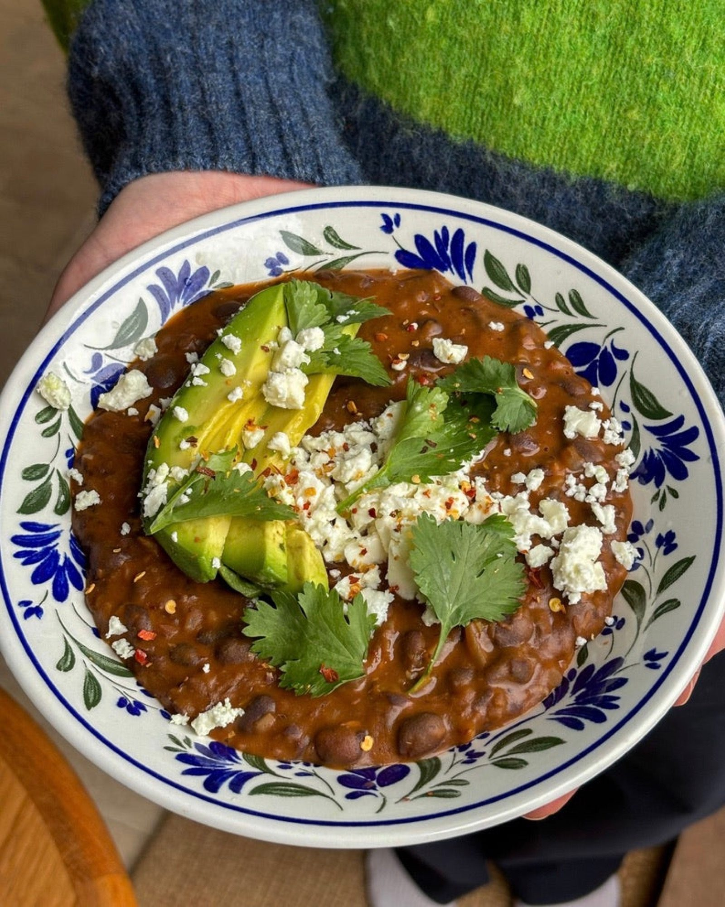

Black Bean Birria
A meat-free version of the Mexican stew, with black beans slowly simmered in ancho chilli, cumin and cinnamon.

Ingredients
To serve
Method
- Soak the 1 dried ancho chilli in hot water to soften.
- Heat the 2 tbsp neutral oil in a large pan over a medium heat.
- Add the 1 onion and 1 celery stick and cook for 8-10 minutes, until softened.
- Stir in the 4 garlic cloves, the ½ red chilli and the 1 tsp cumin seeds or 2 tsp ground cumin, along with the 2 tsp smoked paprika and ¼ tsp chilli powder if you are not using the ancho chilli.
- Cook for 2 minutes, until fragrant.
- If you are serving with rice, get it on to cook now.
- Lift the ancho chilli out of the water, roughly chop it and add it to the pan with the 2 tbsp tomato purée and ½ tsp ground cinnamon.
- Cook for 2-3 minutes, stirring frequently, until the purée darkens. Add a splash of water if it starts to stick.
- Pour in the 700g jar of black beans with their liquid and the 200ml vegetable stock.
- Bring to a simmer, cover and cook for 15-20 minutes, stirring occasionally, until the stew is chocolate brown and about the consistency of a thick soup.
- Warm the rotis, flatbreads or tortillas in the microwave or in a dry pan, just until lightly browned.
- Check the stew for seasoning and add the juice of ½ a lime for freshness.
- Cut the remaining lime into wedges.
- Ladle the stew into bowls and top with the 2 sliced avocados, the 200g crumbled feta, the coriander and a pinch of chilli flakes.
- Serve with the lime wedges and the warm bread or rice, plus any other toppings you fancy.
Notes
- The ancho chilli is optional, but worth seeking out — it gives a real depth of smoky heat. Without it, use the smoked paprika and chilli powder.
- Hearty enough as a stew on its own; rice, crunchy tacos or soft tortillas make it more filling.
Source: https://boldbeanco.com/blogs/beanspo-recipes/black-bean-birria